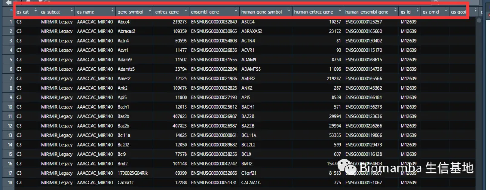

答读者问（五）如何实现各物种基因的ID/symbol的转换
原文：https://mp.weixin.qq.com/s?__biz=MzAwMzIzOTk5OQ==&mid=2247484353&idx=2&sn=8fccb88c871a42c803e313be157ab293&chksm=9b3f7a91ac48f387df8b462f7318596fc5c645d6f05eefac2c598ff6875c0a2eeb902aaf5a15#rd 合集：答读者问
往期回顾：
各物种基因 ID与Symbol转换
Biomamba
2021/11/23
各位在处理高通量数据时，时常遇到表达矩阵的行名并非大家熟知的基因名称而是一堆数字编号的情况。亦或研究了半天的数据集发现并不是自己期望的物种，这时便需要对这些编号、不同物种来源的symbol进行整合
一、物种间symbol转换
假设我有一堆人类的基因symbol需要转换为小鼠的symbol
IDHTM <- c("MS4A1",
"GNLY",
"CD3E",
"CD14",
"FCER1A",
"FCGR3A",
"LYZ",
"PPBP",
"CD8A" )#human symbol
####先把两个物种的symbol对应ID的数据集取出来#######
if(!require(biomaRt))BiocManager::install("biomaRt")
## 载入需要的程辑包：biomaRt
# ?useMart
mart = useMart('ensembl')
data4use <- listDatasets(mart)#查看可供使用的数据集
| data4usedataset | description | version |
|---|---|---|
| abrachyrhynchus_gene_ensembl | Pink-footed goose genes (ASM259213v1) | ASM259213v1 |
| acalliptera_gene_ensembl | Eastern happy genes (fAstCal1.2) | fAstCal1.2 |
| acarolinensis_gene_ensembl | Green anole genes (AnoCar2.0v2) | AnoCar2.0v2 |
| acchrysaetos_gene_ensembl | Golden eagle genes (bAquChr1.2) | bAquChr1.2 |
| acitrinellus_gene_ensembl | Midas cichlid genes (Midas_v5) | Midas_v5 |
| amelanoleuca_gene_ensembl | Giant panda genes (ASM200744v2) | ASM200744v2 |
if(!require(biomaRt))BiocManager::install("biomaRt")
human <-useMart("ENSEMBL_MART_ENSEMBL",dataset="hsapiens_gene_ensembl")
## Ensembl site unresponsive, trying useast mirror
mouse <- useMart('ensembl',dataset = "mmusculus_gene_ensembl")
### 可能会遇到以下网络问题，请自行“科学上网”
#网络问题Ensembl site unresponsive, trying asia mirror
#Error in curl::curl_fetch_memory(url, handle = handle) :
# Timeout was reached: [useast.ensembl.org:8443] Connection timed out after 10000 milliseconds
HumanToMm <- getLDS(attributes = c("hgnc_symbol"),
filters = "hgnc_symbol", values = IDHTM,#对应的要转换的基因名
mart = human,
attributesL = c("mgi_symbol"), martL = mouse)
head(HumanToMm)
## HGNC.symbol MGI.symbol
## 1 LYZ 9530003J23Rik
## 2 LYZ Lyz2
## 3 LYZ Lyz1
## 4 CD8A Cd8a
## 5 CD14 Cd14
## 6 CD3E Cd3e
二、ID 与symbol的转换
if(!require(org.Hs.eg.db))BiocManager::install('org.Hs.eg.db')#人类
## 载入需要的程辑包：org.Hs.eg.db
## 载入需要的程辑包：AnnotationDbi
## 载入需要的程辑包：stats4
## 载入需要的程辑包：BiocGenerics
## 载入需要的程辑包：parallel
##
## 载入程辑包：'BiocGenerics'
## The following objects are masked from 'package:parallel':
##
## clusterApply, clusterApplyLB, clusterCall, clusterEvalQ,
## clusterExport, clusterMap, parApply, parCapply, parLapply,
## parLapplyLB, parRapply, parSapply, parSapplyLB
## The following objects are masked from 'package:stats':
##
## IQR, mad, sd, var, xtabs
## The following objects are masked from 'package:base':
##
## anyDuplicated, append, as.data.frame, basename, cbind, colnames,
## dirname, do.call, duplicated, eval, evalq, Filter, Find, get, grep,
## grepl, intersect, is.unsorted, lapply, Map, mapply, match, mget,
## order, paste, pmax, pmax.int, pmin, pmin.int, Position, rank,
## rbind, Reduce, rownames, sapply, setdiff, sort, table, tapply,
## union, unique, unsplit, which.max, which.min
## 载入需要的程辑包：Biobase
## Welcome to Bioconductor
##
## Vignettes contain introductory material; view with
## 'browseVignettes()'. To cite Bioconductor, see
## 'citation("Biobase")', and for packages 'citation("pkgname")'.
## 载入需要的程辑包：IRanges
## 载入需要的程辑包：S4Vectors
##
## 载入程辑包：'S4Vectors'
## The following objects are masked from 'package:base':
##
## expand.grid, I, unname
##
## 载入程辑包：'IRanges'
## The following object is masked from 'package:grDevices':
##
## windows
##
if(!require(org.Mm.eg.db))BiocManager::install('org.Mm.eg.db')#小鼠
## 载入需要的程辑包：org.Mm.eg.db
##
#在上面我们已经得到了对应的小鼠基因Symbol，下面我们假设需要将其转换为ensemble ID
#（但是大多数情况下大家是拿到ensemble ID想转换为symbol，流程一样，自己动手修改修改代码）
my.mouse.symbol <- HumanToMm
colnames(my.mouse.symbol)[2] <-'symbol'
###取出两个对应关系数据集
g2s<-toTable(org.Mm.egSYMBOL)
g2e<-toTable(org.Mm.egENSEMBL)
myresult1 <-merge(my.mouse.symbol,g2s,by='symbol',all.x=T)
myresult2 <-merge(myresult1,g2e,by='gene_id',all.x=T)
head(myresult2)
## gene_id symbol HGNC.symbol ensembl_id
## 1 12475 Cd14 CD14 ENSMUSG00000051439
## 2 12482 Ms4a1 MS4A1 ENSMUSG00000024673
## 3 12501 Cd3e CD3E ENSMUSG00000032093
## 4 12525 Cd8a CD8A ENSMUSG00000053977
## 5 14125 Fcer1a FCER1A ENSMUSG00000005339
## 6 17105 Lyz2 LYZ ENSMUSG00000069516
三、智能版
也许你觉得上述过程有些繁琐，clusterProfiler 可以帮助你大大的简化这一过程
if(!require(clusterProfiler))BiocManager::install('clusterProfiler')
## 载入需要的程辑包：clusterProfiler
##
## clusterProfiler v4.0.5 For help: https://yulab-smu.top/biomedical-knowledge-mining-book/
##
## If you use clusterProfiler in published research, please cite:
## T Wu, E Hu, S Xu, M Chen, P Guo, Z Dai, T Feng, L Zhou, W Tang, L Zhan, X Fu, S Liu, X Bo, and G Yu. clusterProfiler 4.0: A universal enrichment tool for interpreting omics data. The Innovation. 2021, 2(3):100141. doi: 10.1016/j.xinn.2021.100141
##
## 载入程辑包：'clusterProfiler'
## The following object is masked from 'package:AnnotationDbi':
##
## select
## The following object is masked from 'package:IRanges':
##
## slice
## The following object is masked from 'package:S4Vectors':
##
## rename
## The following object is masked from 'package:biomaRt':
##
## select
## The following object is masked from 'package:stats':
##
## filter
geneList <- IDHTM
gene.df <- bitr(geneList,fromType="SYMBOL",toType=c("ENTREZID","ENSEMBL"),
OrgDb = org.Hs.eg.db)#企业级ID转换
## 'select()' returned 1:1 mapping between keys and columns
head(gene.df)
## SYMBOL ENTREZID ENSEMBL
## 1 MS4A1 931 ENSG00000156738
## 2 GNLY 10578 ENSG00000115523
## 3 CD3E 916 ENSG00000198851
## 4 CD14 929 ENSG00000170458
## 5 FCER1A 2205 ENSG00000179639
## 6 FCGR3A 2214 ENSG00000203747
四、基因信息大合集
其实这几种转换方法都殊途同归，主要原理就是依赖merge函数将各种数据库中的数据框整合在一起，这里给大家一个很详细的基因信息列表供大家选择
if(!require(msigdbr)) install.packages("msigdbr")
## 载入需要的程辑包：msigdbr
## Warning: 程辑包'msigdbr'是用R版本4.1.1 来建造的
Dm_msigdbr <- msigdbr(species="Mus musculus")#用species_name取出数据
Dm_msigdbr[1:5,1:5]
## # A tibble: 5 x 5
## gs_cat gs_subcat gs_name gene_symbol entrez_gene
## <chr> <chr> <chr> <chr> <int>
## 1 C3 MIR:MIR_Legacy AAACCAC_MIR140 Abcc4 239273
## 2 C3 MIR:MIR_Legacy AAACCAC_MIR140 Abraxas2 109359
## 3 C3 MIR:MIR_Legacy AAACCAC_MIR140 Actn4 60595
## 4 C3 MIR:MIR_Legacy AAACCAC_MIR140 Acvr1 11477
## 5 C3 MIR:MIR_Legacy AAACCAC_MIR140 Adam9 11502
